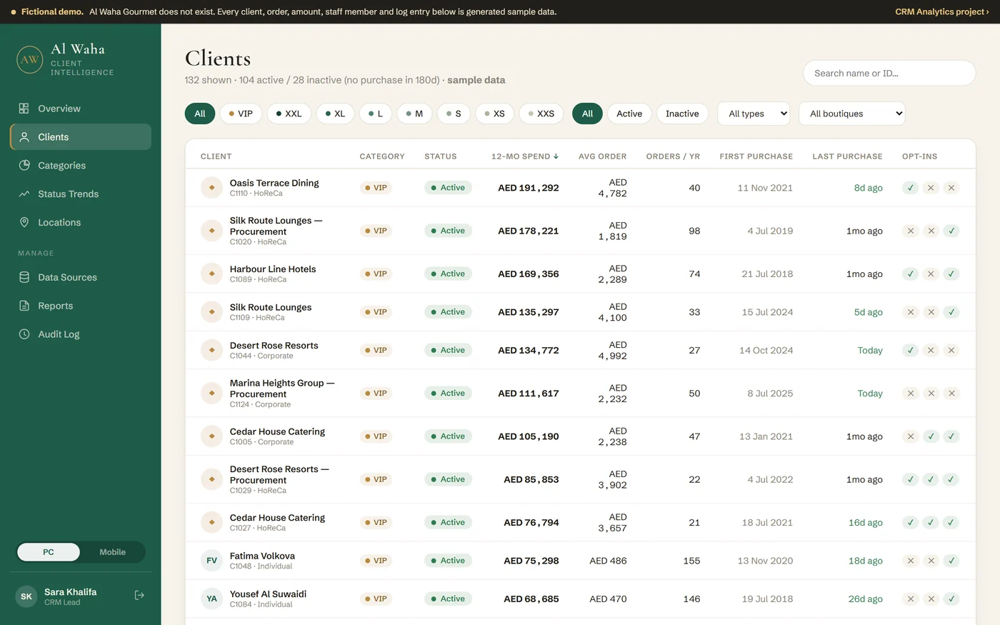

Start here
The client-intelligence portal
The front office a team would actually sit in front of, for a fictional gourmet retailer. Sign in, browse the client base, open a client, watch people move between size categories.
- Eight size categories by trailing-12-month spend
- A 360° client profile with contact consent per channel
- A category transition matrix — who moved, and where
- Data-source, reports and audit-log screens
- A real phone layout, not a shrunken desktop